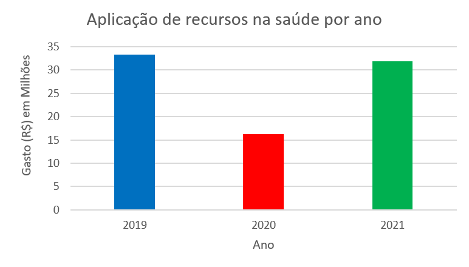

{% extends 'base.html' %}

{% block title %}
    <title>Gráficos - Aparecida</title>
{% endblock %}

{% block body %}
    <h1>Aparecida - Covid longa</h1>
    <hr>

    <div class="campo">
      <select id="municipio" onchange="window.location.href = this.value;">
        <option selected disabled value="">Aparecida</option>
        <option value="acessosjc">São José Dos Campos</option>
        <option value="acessotaubate">Taubaté</option>
        <option value="acessojacarei">Jacareí</option>
        <option value="acessocaçapava">Caçapava</option>
        <option value="acessoaparecida">Aparecida</option>
      </select>
    </div>

    <div class="campo">
      <select id="municipio" onchange="window.location.href = this.value;">
        <option selected disabled value="">Gastos</option>
        <option value="graficos_consultas_aparecida">Consultas</option>
        <option value="graficos_medicamentos_aparecida">Medicamentos</option>
        <option value="graficos_internacoes_aparecida">Internações</option>
        <option value="graficos_gastos_aparecida">Gastos</option>
      </select>
    </div><br>
    <div class="alinhar">
      
    </div>

    <!-- Gráfico 5 maiores gastos -->
    <div class="gf">
      <canvas id="myChart"></canvas>
      <a class="fontes" href="http://186.237.10.58/portal-transparencia/execucao/despesas-detalhadas" target="_blank"> Fonte: http://186.237.10.58/portal-transparencia/execucao/despesas-detalhadas </a>  
    </div>

    <!-- Legendas -->
    <div class="legendas">
      <!-- Lista dos anos -->
      <ul>
        <!-- 2019 -->
        <li>
          2019
          <!-- Lista dos gastos -->
          <ul>
            <li>a</li>
          </ul>
        </li>
        <!-- 2020 -->
        <li>
          2020
          <!-- Lista dos gastos -->
          <ul>
            <li>a</li>
          </ul>
        </li>
        <!-- 2021 -->
        <li>
          2021
          <!-- Lista dos gastos -->
          <ul>
            <li>a</li>
          </ul>
        </li>
        <!-- 2022 -->
        <li>
          2022
          <!-- Lista dos gastos -->
          <ul>
            <li></li>
          </ul>
        </li>
      </ul>
    </div>

    <!-- Script do gráfico -->
    <script src="https://cdn.jsdelivr.net/npm/chart.js"></script>
    <script>
      const ctx = document.getElementById('myChart');

      new Chart(ctx, {
      type: 'bar',
      data: {
          labels: [2019, 2020, 2021, 2022],
          datasets: [
          {% for ordem in gastos %}
          {
          label: "{{ gastos.index(ordem)+1 }}º Maior gasto",
          data: {{ ordem }},
          backgroundColor: [
            "{{ cores[gastos.index(ordem)] }}"
          ],
          borderWidth: 1
          },
          {% endfor %}
        ]
      },
      options: {
          responsive: true,
          maintainAspectRatio: false,
          scales: {
          y: {
              beginAtZero: true
          }
          }
      }
      });
  </script>
{% endblock %}

{% block footer %}
<footer class="footer">Copyright © 2023 Syntax Squad | Todos os direitos reservados</footer>
{% endblock %}
